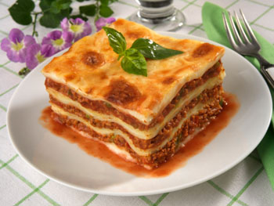

Lasagna

Description
This recipe is a delicious recipe for lasagna! But not just any lasagna. This lasagna is
the kind of lasagna that you would literally die eating. Because it's so good and tasty and stuff.
If you continue reading from this point on, I am not responsible for what may happen to you...
Ingredients
- Flour
- Meat (Of your choice)
- Mysterious cheeses
- A profound love of all things pasta
- A happy face
Steps
- Take the flour, and combine it with water
- The flour should now become pasta-esque in consistency
- Take newly pastafied floury mixture, and transfer it into a bowl of extremely hot water
- Boil for five minutes, preferably away from any small children or animals
- Begin adding the meats and cheeses
- Stir your mixture until it has become a vague mass of cheesey, meat-like pasta
- Drain the water, and then bake the mass of meaty cheese for approximately 15 minutes at 440 degrees
- Take the lasagna out of the oven
- Enjoy! :)